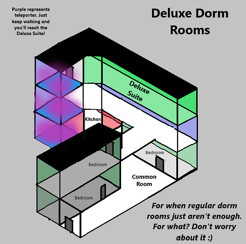
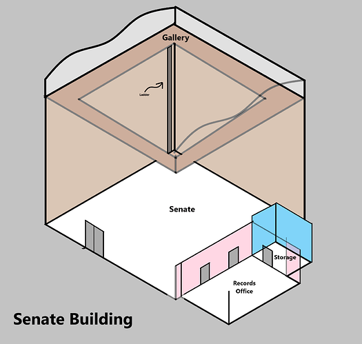
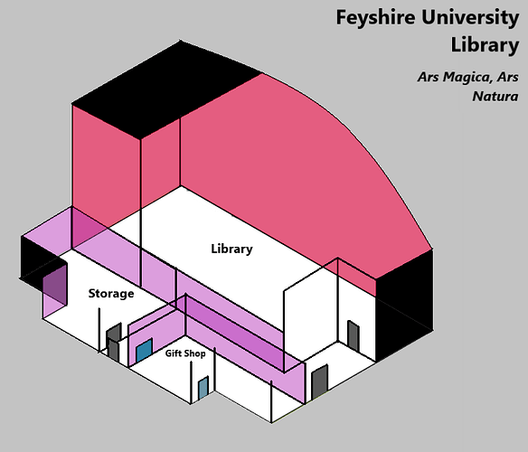

What is this?
- Dangan Ronpa is a forum game based on the approximately popular game series of the same named, except because I’m hosting it, there will be a minimal amount of anime.
- In the game, you explore the map in the Daily Life phase, uncover evidence in the Deadly Life phase, and attempt to bring the killer to justice in the Class Trial. You can perform actions that could be- well, just about anything an actual human could do.
- In the game, the majority of players will be Participants, but one player, lurking among them, will be the nefarious Mastermind, plotting their destruction.
- There are two ways to win as a Participant:
-
- Survive the killing game, unveil all the Blackened, and expose the Mastermind in the FINAL TRIAL
-
- Commit murder and survive to escape the town.
- There are two ways for the Mastermind to win:
-
- Ensure the Participants fail to expose N murderers. The value of N is unknown, even to the Mastermind.
-
- Survive the FINAL TRIAL without being exposed.
- Note that the Mastermind cannot directly kill, but they have other… advantages that they can use to help bring the Participants down.
- There are also the neutral Wildcards, who win by doing:
-
- Something. You don’t know what, but something.
Daily Life
- During this phase, players may perform actions freely (explained below), explore the academy, and do incredibly stupid and completely unjustifiable actions for the sake of ephemeral comedy.
- Throughout the map are secret items, hidden rooms, puzzles, and at least one secret passage. Some of these items are murder weapons. Do with them what their name suggests and you might win.
- During Daily Life, players have the option to become Blackened by comitting murder. This action is tiring, but could potentially win you the game if you go undetected.
- During this phase, the game will change between Day and Night, on a 12/12 cycle.
- The following changes will occur during night time:
-
- Murders have a +2% chance of succeeding at night time, thanks to the low visibility.
-
- Sleeping in your dorm room will gain you +30% of your AP per hour, and will allow you to have 150% more than your AP maximum. This is opposed to sleeping during the day, which grants +20% per hour and does not allow you to exceed your AP maximum.
-
- The base cost for moving between locations will become 2 AP instead of 1 AP.
- This phase will end when a body is discovered by a group of three or more players encountering a dead body. This could, of course, include the Blackened.
Deadly Life
- Players may investigate the school once more, but not to explore. Instead, they must determine the identity of the killer by finding evidence. The phase lasts for 24 hours.
- This phase is fairly simple, so I shall use the rest of this section to explain some finer points of homicide:
-
- Killing a player is a mix of RNG and stats, and costs 40% of your total AP to work up the nerve to murder.
-
- When a murder happens, it’s extremely likely that physical evidence will be left behind, and there’s not much you can do to stop that. Mostly blood.
-
- Due to magical wards in place in the town, all items marked with blood cannot be dropped outside of the building the murder was comitted in.
-
- Items involved in the murder that are not covered with blood can be placed anywhere, but cannot be easily destroyed.
-
- A maximum of 2 players may be murdered in each Daily Life phase. If two seperate murders were comitted, only the murderer of the first body to be discobered is Blackened. There are only a few, niche, exceptions to this rule:
-
-
- If the bodies were discovered simultaneously, the murder which was committed first chronologicaly decides the Blackened.
-
-
-
- If the murderer of the first victim is then murdered, their murderer will be the Blackened.
-
-
-
- If both murders were committed simultaneously and discovered simultaneously, the Blackened will be decided by luck.
-
-
- A dead player can be Blackened in cases of suicide. However, without access to necromancy, it is impossible to win this way.
Class Trial
- For 48 hours, players may freely discuss the murder, the evidence, and the identity of the killer. No actions may be performed except for showing the class evidence in your inventory.
- Players may vote privately during the Class Trial. If all players have voted, the phase will end early.
- Votes are weighted according to your INT stat. Please check later sections.
- If all players excepting the Mastermind and the Blackened vote correctly, the trial is automatically a success.
Items And Stats
- There are 5 stats in the game:
-
- STR - How strong you are, your ability to perform physically taxing actions.
-
- CON - How resistant you are, rarely used for stat rolls, but determines AP.
-
- AGI - How fast and dexterous you are.
-
- INT - How smart you are, determines your vote weight in class trials, and affects your ability to perform complex, precise actions.
-
- LUK - Your affinity for the endless stream of random bullshit endemic to killing games.
- In addition, all players (unless otherwise stated) have 5 Public Item Slots and 1 Private Item Slot, each of which can hold one item.
- Public Item Slots can be inspected at any time. However, you may only check another player’s Public Slots a maximum of 3 times per cycle.
- Private Item Slots cannot be checked normally. However, during the Deadly Life phase, one Private Item Slot from each player will temporarily become public.
- It is possible to steal another player’s items from one of their Public Slots by passing a roll of (AGI/2)%
IMPORTANT STAT INFO (FOR NERDS (AND ALSO PEOPLE WHO WANT TO LIVE))
- Melee Attack Kill Chance = (50 + (Attacker STR - Defender STR)/2 + Weapon Attack - (Defender’s LUK/8))%
- Projectile Kill Chance = (50 + (Attacker AGI - Defender AGI)/2 + Weapon Attack - (Defender’s LUK/8))%
- Poision Kill Chance = 100%, unless an antidode is found.
- Time Until Poison Kill = (Poison Power)*(1+Defender’s CON/5). Symptoms will be experienced depending on the poison.
- Electrocution, Drowning, Burn, And Miscellaneous Kill Chance = 100% - (Victim’s CON/2 + LUK/5). Advantage (roll twice, if either roll kills, the victim is dead) may be given for strong miscellaneous methods, Disadvantage (roll twice, the victim may only die if both kill) may be given for weak miscellaneous methods of murder. Use with caution.
- Maximum AP = 25 + CON/4
- Vote Weight = 80 + INT/2
AP And Actions
- All players begin the game with an amount of AP. Moving rooms costs 1 AP during the day (2 AP at night).
- All actions, unless otherwise stated, cost 1 AP
- Murdering another player costs 40% of your total AP to attempt.
- AP may be recovered by the following methods:
-
- Sleeping. During the day, recover 20% of your max AP each hour. At night, this moves up to 30% of your max AP.
-
- Eating.
-
- Magic
Roles, and also Magic
- All players will have a role granting them special abilities. You are free to reveal these abilities, but note that there are… certain incentives not to claim your true capabilities. These cards also include a name and gender.
- Each role has a one-use ULTIMATE ABILITY, which can only be used once per game, but have exceedingly powerful effects.
- Magic exists within this game, allowing players to violate the laws of physics, and additionally the laws of taste. However, magic obeys very strict rules, and is very hard to keep a secret. It cannot be used as a catch-all. Be sure to familliarise yourself with the arcane if you wish to use it as a weapon, or uncover the nature of its’ use.
Map
Each of the building areas marked by a letter has their own unique minimap in 3D. See them below:
A, B, and C - Dorm Rooms

D - Deluxe Dorm Rooms

E - Hospital
F - Bank

G - Senate

H - Library

Changes From Previous Games (TL;DR)
- The nature of discovering bodies has changed somewhat.
- Some of the wording has been changed to be a bit more naturalistic.
- Magic exists and can be manipulated as part of the game. Otherwise, the game will stick more closely to reality. Expect slightly more detail forensics-wise.
Signups
{kind=link}